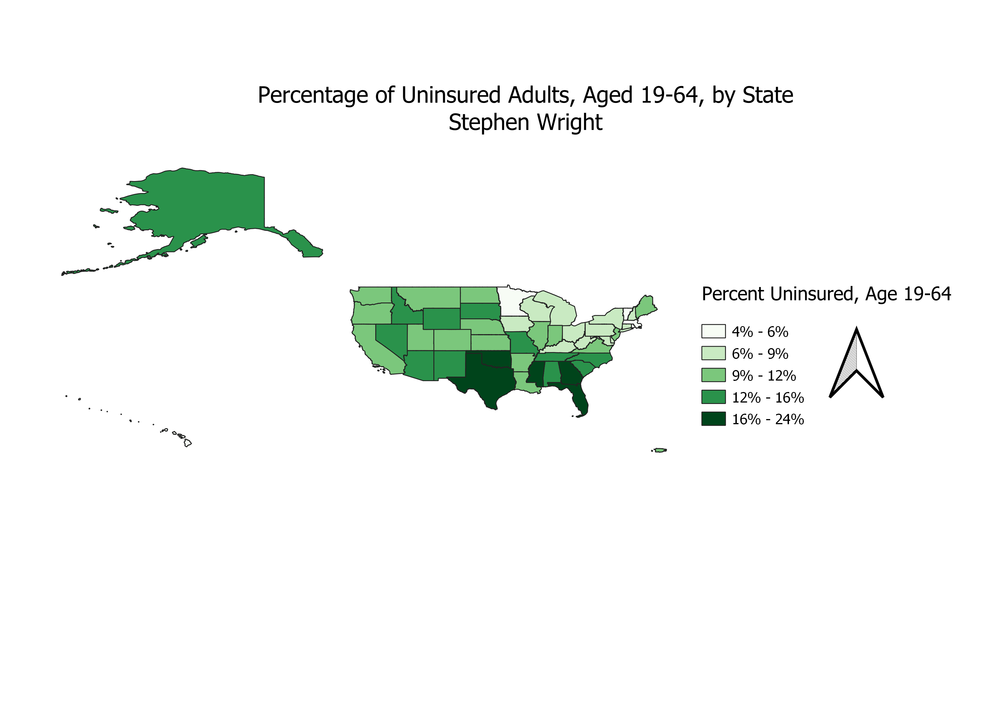

Homework 9: Uninsured Americans
Stephen Wright
This map describes the percentage of Americans ages 19-64, who were uninsured as of 2018.
This distribution ranges from as low as 4 percent in Massachusetts, to as high as 24 percent in Texas.
There are several trends present in this data, showing that states in the northeast and midwest generally have
a higher percentage of insured adults, whereas states in the south/southeast see substantially lower percentages
of coverage. I chose this topic as the political and economic debates surrounding healthcare coverage and accessibility
continue to be salient issues in our everyday news cycle. It also shows that even years after the signing of the Affordable
Care Act which sought to make insurance accessible to every American, large swaths of Americans are, for reasons not made clear
in this data set, still without coverage.

Data used for this project
Link to Original Data
Cleaned CSV Dataset
Link to ShapeFile (.shp)